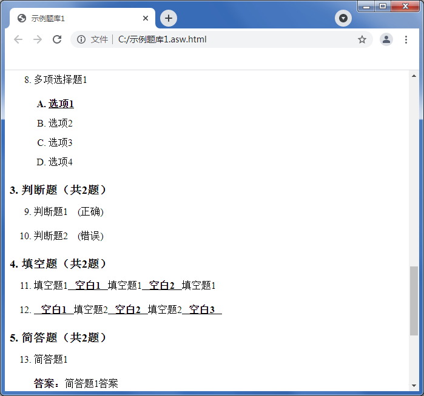

生成试卷
生成试卷
“生成试卷”将根据题库生成一张试卷，并附答案。
首先对试卷的题目、分数进行设置，详细说明请参见
考试设置。然后进入如下界面进行格式设置：
文本+图像文件形式：生成纯文本形式的试卷，试卷中包含的图片将导出为图片文件，保存于与试卷文件相同路径的文件夹下。此类型试卷除换行外不包含任何排版信息，可使用文本编辑器打开及编辑。
HTML文件+图像文件形式：生成HTML形式的试卷，试卷中包含的图片将导出为图片文件，保存于与试卷文件相同路径的文件夹下。此类型试卷包含一些简单的排版信息，可使用绝大部分网络浏览器（包括较旧版本的IE）浏览及打印。
单HTML文件形式：生成HTML形式的试卷，试卷中包含的图片以代码形式嵌入HTML文件中（不导出图片文件，可能导致试卷文件较大）。此类型试卷包含一些简单的排版信息，可使用支持HTML5规范的网络浏览器浏览及打印，使用IE8及更旧浏览器可能无法正常查看图片。
 | 试卷文件中包含的排版信息有限，若您需要分隔线、装订线等格式，请自行使用排版工具进行排版。
您也可以使用任何所见即所得HTML编辑器对HTML试卷文件进行编辑。 |
|---|
试卷答案保存在试卷文件相同路径下，可选择保存为以下格式：
仅答案：答案文件保存为文本形式，文件中仅包含答案。
带原题：答案文件中包含题目及答案信息，答案文件格式与试卷文件格式一致。

带解析：勾选后，答案文件中包含解析。
在生成HTML格式试卷时，可设置HTML文件的字体。
西文字体：默认字体，试卷中的数字、字母使用此字体。
正文字体：试卷中题目的字体。
引文字体：当试卷中包含题目组时，题目组描述的字体。
生成后，将使用默认程序自动打开试卷文件。
GX Software 2020-2021
V2.0